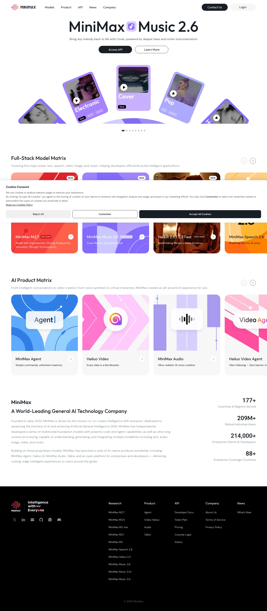

Minimax 主题
Minimax 的 Design.md 主题展示，围绕AI、媒体内容、强视觉、暗色界面组织页面。
AI model provider. Bold dark interface with neon accents.
AI媒体内容强视觉暗色界面霓虹视觉SaaS 产品开发工具浅色界面B2B 产品效率工具专业工具

来源
- 来源
- getdesign.md
- 镜像
- github:VoltAgent/awesome-design-md
- 网站
- https://minimax.io/
- 详情
- https://getdesign.md/minimax/design-md
色板
#0a0a0a: #0a0a0a#1d4ed8: #1d4ed8#000000: #000000#ffffff: #ffffff#181e25: #181e25#ff5530: #ff5530#ea5ec1: #ea5ec1#1456f0: #1456f0#3b82f6: #3b82f6#17437d: #17437d#3daeff: #3daeff#bfdbfe: #bfdbfe
字体
display: DM Sansbody: DM Sansmono: ui-monospacehints: DM Sans,ui-monospace,Inter
圆角
control: 8pxcard: 32pxpreview: 24pxpill: 9999pxsource: design-md
间距
xxs: 4pxxs: 8pxsm: 12pxmd: 16pxlg: 20pxxl: 24pxxxl: 32pxxxxl: 40pxsection-sm: 48pxsection: 64pxsection-lg: 80pxhero: 96pxsource: design-md
使用建议
建议
- 建议：Use {colors.primary} (black) as the dominant CTA — it's the brand's most recognizable interactive element。
- 建议：Reserve product brand colors ({colors.brand-coral}, {colors.brand-magenta}, {colors.brand-blue}, {colors.brand-purple}) ONLY for product-identity moments — never for general buttons or text。
- 建议：Pair {rounded.hero} (32px) gradient cards with {rounded.xl} (16px) white cards in the same viewport — the radius contrast is the visual signature。
- 建议：Apply {rounded.full} to every button, every pill tab, every badge。
- 建议：Use {typography.hero-display} (80px) with -2px letter-spacing for hero displays — never compromise the leading or letter-spacing。
避免
- 避免：use brand-coral or brand-magenta on body text or large surfaces — they lose meaning when overused。
- 避免：soften corners on buttons (anything less than {rounded.full}); the pill is a brand signature。
- 避免：introduce a second display typeface; DM Sans handles every role。
- 避免：reduce hero leading below 1.10 — the brand needs that breathing room on the 80px display。
- 避免：apply heavy shadows on white cards; flat-with-borders is the documentation default。
查看 DESIGN.md